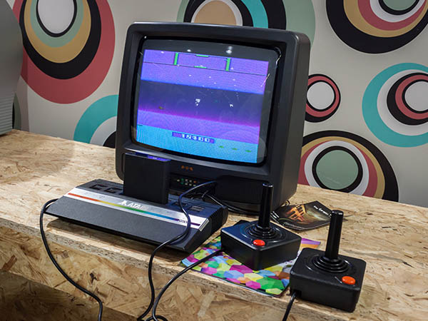

Máquina de Turing
Antes de entender o desenvolvimento do primeiro computador, assista a este vídeo sobre a máquina de Turing: um precursor matemático do computador.
Vamos ver agora como ocorreu o desenvolvimento do computador, conhecendo suas quatro gerações.
Gerações dos computadores
Primeira geração: vávulas termiônicas
Ainda durante a Segunda Guerra Mundial, nos Estados Unidos, foi desenvolvido o primeiro computador eletrônico da história. Trata-se do ENIAC, um computador integrador numérico eletrônico, cujos números impressionam. Veja a seguir uma foto deste modelo:
-
Componentes:
170.000 válvulas termiônicas. -
Peso:
Cerca de 30 toneladas. -
Espaço utilizado:
Sala de 150m². -
Capacidade de processamento (número de cálculos por segundo):
1 bilhão de vezes menor que a dos celulares usados hoje em dia.
Para evoluirmos desse verdadeiro elefante até os computadores atuais, foi preciso substituir as válvulas, já que elas eram pesadas e espaçosas.
É possível que você esteja se perguntando: o que tornou isso viável?
Quem possibilitou isso foi o transistor, cuja criação iniciou a era da microeletrônica.
Segunda geração: transistores
Terceira geração: circuitos integrados
Na imagem, um circuito integrado.
Com o uso de transistores e CI, os computadores ficaram menores e cada vez mais baratos.
Duas famosas empresas do setor, aliás, surgiram nesse período:
Microsoft Corporation
Empresa de maior faturamento em programas de computador, conhecida pelo sistema operacional Windows e pelo conjunto de ferramentas chamado de Office. Fundada em 1975, nos Estados Unidos, por Bill Gates (um dos homens mais ricos do mundo) e Paul Allen.
Apple Inc.
Em 1976, vendeu 200 unidades do seu primeiro PC, o Apple I. No ano seguinte, contudo, o Apple II vendeu milhares de unidades. A organização, então, abriu seu capital na bolsa de Nova York.
Quarta geração: microprocessadores
A década de 1980 presenciou a proliferação de PCs cada vez mais potentes, baratos e conectados por meio do surgimento das redes locais de computadores e da internet: a rede mundial.
Além disso, um novo equipamento aparecia nos lares: o videogame, um tipo de computador especializado, cujos programas são jogos eletrônicos com ênfase nos gráficos e na interação com os usuários.
Após o fim do século XX, os computadores já eram tão pequenos e potentes que se encontravam embarcados em diversos equipamentos cotidianos, como automóveis, aviões e videogames, além de se tornar mais comum a presença dos laptops (microcomputadores pessoais portáteis) nas casas das pessoas.
Não tardou muito para que eles fossem integrados a televisões e celulares. Nos anos 2010, essa integração passou a ser feita por intermédio de smartphones e smart TVs.